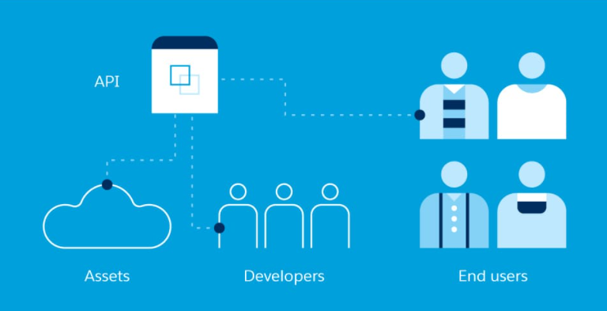

What is API?
API stands for Application Programming Interface. As the name suggest it is a software interface between two applications that interact with each other seamlessly. Basically, API is a software that interacts and share required data among 2 applications.
Let us understand with the help of some examples:
- We went to a restaurant, order some dishes from the menu card available and later receive our order after sometime. Here the customer doesn't know what goes on the kitchen where food was cooked. Similarly API interacts with two application, provide only the required information so that the entire work is happening in a smooth manner.
- Also when we want to book a flight, we enter our desired locations and date, it is the API that sort out all the available flights matching our requirement.
- Google maps linked with Ride-hailing apps and food delivery app is possible with the help of APIs.
Why APIs?
The main advantage of API is to allow accessing information from other sources without much investment of time and money. Like we start a ice-cream truck business and users want to check how close is our truck from their place, instead of making a tracking app ourselves we can rather use services of Google maps by incorporating it with our location through API.
If you want to make a Chinese-English translator app. You can initate by noting down all english words and wrte their chinese translation, but this will become a cumbersome process and might not be efficient. Rather than with the help of API we can take input from user and let API handle matching the input with already available data and return with the correct answer.
Types of APIs
- 1.Open APIs are the APIs that are available in public domain and can be used freely. This is why they are also called as public API.
- 2.Partner APIs are the API that have restricted usage to specific people or organization as they have got its license. Still developers can access these APIs for self service by completing onboarding process with the owner.
- 3.Private APIs are the APIs that can not be used by outsiders of the company as it is restricted for a particular company to improve productivity and communication.

What is Web APIs?
A Web API is an application programming interface which is use either for web server or a web browser.Types of WebAPI:
- Server-side:Server-side web API is a programmatic interface that consist of one or more publicly exposed endpoints to a defined request–response message system. It is typically expressed in JSON or XML
- Client-side:A client-side web API is a programmatic interface helps to extend functionality within a web browser or other HTTP client.